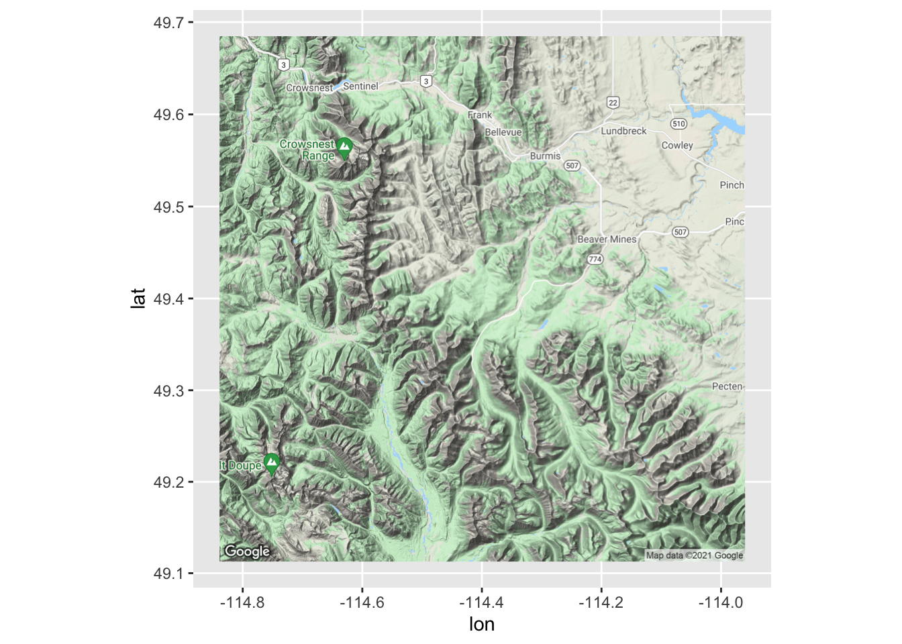
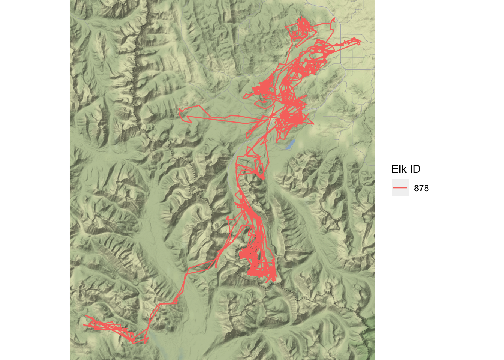
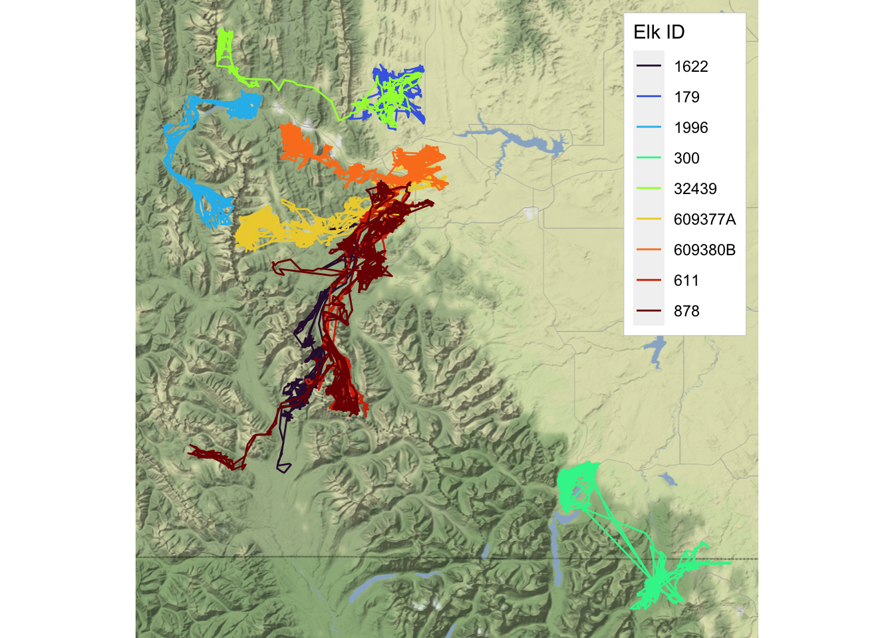

Chapter 5 Elk Usage of the Landscape
In the previous chapter, I showed graphically how elk were moving individually and in relation to each other. The graphs I made were interesting, but they didn’t really show the whole picture.
I decided to do a deep dive into the world of ggmap.
Ggmap allows you to bring in a Google Map image of an area of interest and overlay data points on top of it. I thought this would be super useful in helping me visualize how these elk were moving on the landscape.
I needed to get an API key to register myself to use ggmap, which was a headache all on its own! I am keeping it hidden because it is a unique identifier for me.
First, I set up a google map by using the coordinates given for the study area in Movebank:
elk_map <- get_googlemap(center = c(-114.400, 49.400))## Source : https://maps.googleapis.com/maps/api/staticmap?center=49.4,-114.4&zoom=10&size=640x640&scale=2&maptype=terrain&key=xxxThen, I successfully pulled in a map of the study area, without data points:
ggmap(elk_map, extent = "normal")
There is the general area of the elk study!
Next, I subset some data to be able to plot points on this map:
solo_elk <- gps %>%
filter(elk_id == "878")facet <- gps %>%
filter(elk_id %in% c("1622", "878", "300", "611",
"609380B", "32439", "179", "1996", "609377A"))And finally, I can plot elk 878 with some actual context:
qmplot(longitude, latitude, data = solo_elk, color = elk_id, geom = "path",
legend = "right") +
labs(color = "Elk ID")## Using zoom = 11...## Source : http://tile.stamen.com/terrain/11/371/698.png## Source : http://tile.stamen.com/terrain/11/372/698.png## Source : http://tile.stamen.com/terrain/11/373/698.png## Source : http://tile.stamen.com/terrain/11/374/698.png## Source : http://tile.stamen.com/terrain/11/371/699.png## Source : http://tile.stamen.com/terrain/11/372/699.png## Source : http://tile.stamen.com/terrain/11/373/699.png## Source : http://tile.stamen.com/terrain/11/374/699.png## Source : http://tile.stamen.com/terrain/11/371/700.png## Source : http://tile.stamen.com/terrain/11/372/700.png## Source : http://tile.stamen.com/terrain/11/373/700.png## Source : http://tile.stamen.com/terrain/11/374/700.png## Source : http://tile.stamen.com/terrain/11/371/701.png## Source : http://tile.stamen.com/terrain/11/372/701.png## Source : http://tile.stamen.com/terrain/11/373/701.png## Source : http://tile.stamen.com/terrain/11/374/701.png## Source : http://tile.stamen.com/terrain/11/371/702.png## Source : http://tile.stamen.com/terrain/11/372/702.png## Source : http://tile.stamen.com/terrain/11/373/702.png## Source : http://tile.stamen.com/terrain/11/374/702.png
Now elk 878’s movements make a lot more sense. It stuck mostly to valley bottoms and spent some time in the upper right hand corner where more roads and civilization appear to be.
And finally, a plot of the 9 elk used in the previous facet wrap:
qmplot(longitude, latitude, data = facet, color = elk_id, geom = "path",
legend = "topright", zoom = 10) +
scale_color_viridis_d(option = "turbo") +
labs(color = "Elk ID")## Source : http://tile.stamen.com/terrain/10/185/348.png## Source : http://tile.stamen.com/terrain/10/186/348.png## Source : http://tile.stamen.com/terrain/10/187/348.png## Source : http://tile.stamen.com/terrain/10/188/348.png## Source : http://tile.stamen.com/terrain/10/189/348.png## Source : http://tile.stamen.com/terrain/10/185/349.png## Source : http://tile.stamen.com/terrain/10/186/349.png## Source : http://tile.stamen.com/terrain/10/187/349.png## Source : http://tile.stamen.com/terrain/10/188/349.png## Source : http://tile.stamen.com/terrain/10/189/349.png## Source : http://tile.stamen.com/terrain/10/185/350.png## Source : http://tile.stamen.com/terrain/10/186/350.png## Source : http://tile.stamen.com/terrain/10/187/350.png## Source : http://tile.stamen.com/terrain/10/188/350.png## Source : http://tile.stamen.com/terrain/10/189/350.png## Source : http://tile.stamen.com/terrain/10/185/351.png## Source : http://tile.stamen.com/terrain/10/186/351.png## Source : http://tile.stamen.com/terrain/10/187/351.png## Source : http://tile.stamen.com/terrain/10/188/351.png## Source : http://tile.stamen.com/terrain/10/189/351.png## Source : http://tile.stamen.com/terrain/10/185/352.png## Source : http://tile.stamen.com/terrain/10/186/352.png## Source : http://tile.stamen.com/terrain/10/187/352.png## Source : http://tile.stamen.com/terrain/10/188/352.png## Source : http://tile.stamen.com/terrain/10/189/352.png
It looks like the elk actually did have overlapping home ranges and many stayed in similar areas. Elk 300 was isolated from the others and even crossed over the border into Montana.
I was incredibly excited to be able to get ggmap to work properly and to produce a very cool map showing elk movement. It looks like movement varies widely individually and many elk actually have home range overlaps. This would generally be expected because they are a herd species and in the rut, males keep harems of females, so more elk would be in the same places. I would probably have a better understanding of how the elk move if all 98 were plotted on this map, but to avoid too much confusion, I’ll stick with the nine currently plotted!